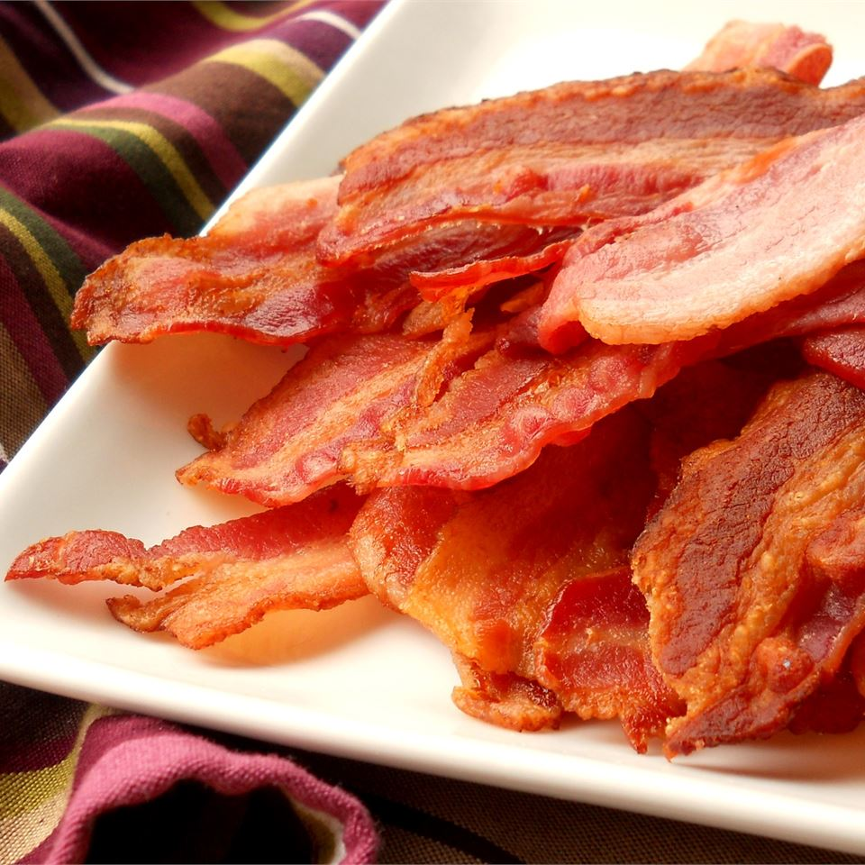

Description
Easy to follow recipe for Crispy Bacon. Very low maintenance!
Just pop in the oven! Great for crispy flat bacon to add as a side to your eggs.
Excellent for making morning or brunch sandwiches.Perfect for serving family
and friends.Cook time is 15 minutes and preparation time is 5 minutes.
Total servings is for 4 people.